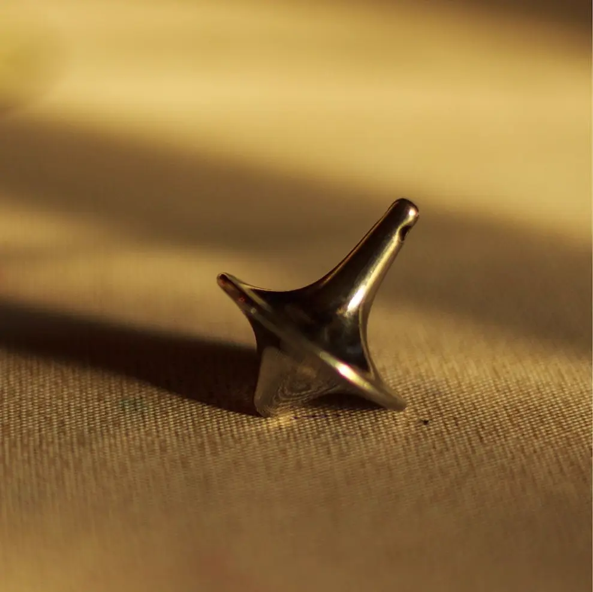

Reality
Reality
 Idealization
Idealization
 Discretisation
Discretisation
 Geometry
Geometry
 Algebra
Algebra
Reality Question
A child winds a string around a wooden top and pulls hard, setting it spinning on the floor. At first, it stands perfectly upright. But as it slows down, it begins to lean sideways. Instead of immediately tipping over, the top stays tilted and its tip slowly traces out a wide circle on the floor.
Why doesn't it simply fall over? And what decides how fast it drifts around in that circle while leaning?
A mathematical model helps answer this.
